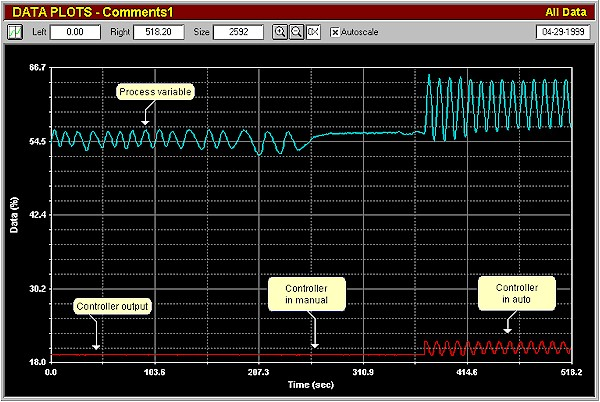
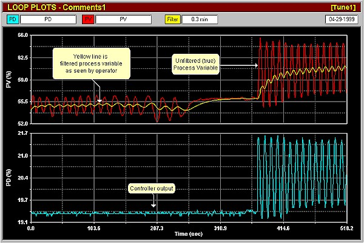
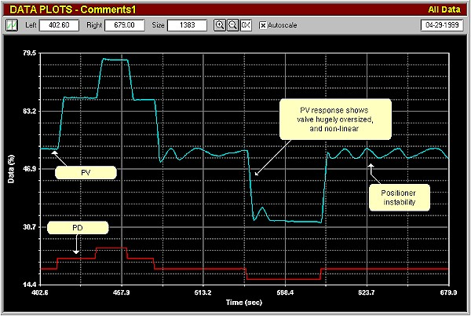
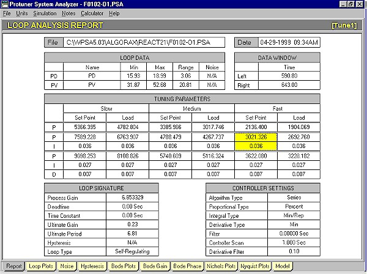
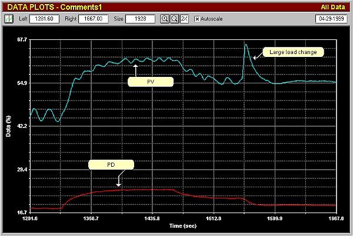

|
| [Home] [About us] [Contact us] [Training] [Optimisation services] [Protuner] |
| [Loop signatures] [Case histories] [Continuous loop performance monitoring] |
|
Control Loop Case History 46 ANALYSIS UNCOVERS CONTROL PROBLEMS IN A PROCESS PLANT At the start of courses on practical feedback control held in the actual plant, the author normally asks the delegates for their estimates as to what percentage of their control loops they think are working reasonably well. The last two days of the course are spent in optimising live loops in the plant, and at the end it is interesting to count how many loops actually were working reasonably well prior to optimisation. On a recent course in a South African plant, the estimates ranged between 40 and 60%. Nine loops were analysed and optimised when possible, during the practical work session. The delegates were fascinated by the fact that not even one of the nine loops was working anywhere near to what could be termed "reasonable". Quite a few major equipment and process design problems were also encountered, some of which will be covered here and the remainder in subsequent articles. Similar estimates and findings have also occurred in virtually every one of the many hundreds of local and foreign plants where the author and his colleagues have presented these courses. The reason that people in most plants have no real idea why the majority of their loops are generally completely ineffective in automatic is because until now, there have been no truly practical training courses on control loop optimisation, including being able to judge if a loop is working well or not. A lot of people feel the control is good if the controller is in automatic, and the process is on setpoint. However the majority of process plants are running most of the time under steady state conditions, where very few large changes normally occur. Under these conditions the process will generally get to setpoint sooner or later, and look good, even with poor tuning. However if a sudden load upset occurs, then the controller usually cannot catch it, and the operator then switches to manual to deal with it. Operators also normally make process changes in manual, and only switch back to automatic when the process is steady again. General Comments on Tests at the Plant Nearly all loops tested were generally found to be tuned with all three parameters, viz. P, I and D. This is most unusual (see previous articles on the use of the derivative term). The reason for it is that the DCS system in the plant has a self-tuning function, which like many of its type has insufficient intelligence to apply the D term correctly. In addition none of the loops had good tuning. Flow loops had far too much gain, and too slow an integral. Integrating loops had too low a gain, and too fast an integral. Some loops were tuned pretty close to instability. Apart from this most loops had relatively heavy process variable filters. (Refer previous articles on the dangers of filtering). It should be noted that the flowmeters used on all the loops tested were magnetic flow meters. This is mentioned as the most of the loops worked on had to control over a wide range, which would not have been possible with differential head type meters, such as orifice plates and d.p. cells. Analytical tests carried out on loops normally consist of 3 types. In the first test the controller is in automatic with the existing "as found" parameters, and a setpoint change is made. This test allows one to judge how well the control is working with those parameters, as well as occasionally illuminating problems. The second test is in open loop (controller in manual), and step changes are made in the controller output, the number of steps made depends on whether the process is self regulating or integrating. This is the main analytical test which reveals equipment and other problems. Tuning is also calculated from this test. If the loop can be optimised, then a final close loop test is conducted to judge the performance with new tuning parameters as calculated from the open loop test. Oil Flow Control Loop F0102 This loop is very important for product quality. The existing tuning parameters were: P = 230% I = 0.77m D = 0.15m PV filter =0.3m Figure 1 shows the first test. The controller was initially in manual. It can be seen that there is an oscillation of some 3% amplitude on the process variable (PV). On placing the controller in automatic the amplitude of the cycle increased to 11%. The amplitude of the cycle on the controller output (PD) was 2.5%.  Figure 1 To digress a little, the reason for the increase in amplitude when in automatic is that the period of the cycle is approximately 10 seconds, and the ultimate period of the loop (determined in the tuning analysis) is 6.8 seconds . The ultimate frequency of a feedback control loop is effectively the natural resonant frequency of the loop. Therefore any external cyclic disturbance affecting the loop with a period between roughly 0.2 and 6 ultimate periods, will cause the loop to react with increased variance in automatic. (Refer previous article). Also of interest is the fact that the amplitude of the cycle on the PV is much larger than that on the PD. This is because the valve is very badly oversized – see later. Of even more interest was the fact that previously the operators and C&I people had no idea that there was a significant cycle on the loop, the reason being the large filter on the PV. Figure 2 illustrates the same test with a 0.3 minute filter on the PV. The filtered signal is what was actually seen on the plant operating screens. (Figure 2 is very enlarged and the cycle would not appear so obvious on the screen with its lower resolution and slow update time. The cycle can also be clearly seen on the controller output (PD), but people doing tuning seldom pay attention to that signal, which is a pity as the PD is also very important).  Figure 2 Why was the loop cycling? One would firstly suspect that some external effect could be responsible. The oil flow is fed off a header which has a back-pressure control on it to keep constant header pressure. A second oil flow is also fed off the header. It would account for the cycle if either of these other loops was unstable. Both the other loops were then placed in manual to try and stop the cycle, but it still persisted. The control valve was then examined and it was found that its positioner was unstable! In another closed loop test "as found" (not shown here), it was ascertained that with the existing tuning, it took approximately 4 minutes for the controller to complete a 10% setpoint change, which is very slow for a flow loop. Figure 3 shows the open loop test. Equal step changes on the PD resulted in much larger but unequal steps on the PV, indicating that the valve was hugely oversized (approximately 7 times), with non-linear installed characteristics. It can be also be seen that the positioner cycle is not always occurring, and is erratic. Another problem associated with very oversized valves is that they of necessity, have to operate very close to seat. This is very bad as valves are often very non-linear, and sometimes unstable near seat. A general "rule of thumb" is that valves should under normal control conditions operate with more than 20% of flow passing through them.  Figure 3 Very little can be done to obtain really good control with a valve with these problems. However as it is not possible in most cases to immediately fix or replace faulty valves, one tries to tune the controller with parameters that will allow the most suitable control performance with relevant sufficient robustness (i.e. safety), to be performed until something can be done about the valve. On a loop with a valve like this, one would attempt to use a tuning that is robust enough to cater for the oversizing and non-linearity, and with as small as possible gain to keep cycling of the PD resulting in the PV cycle being amplified through the proportional gain amplifier in the controller as small as possible. At the same time as performance is critical in this case, the response should be as fast as possible. Figure 4 shows the Protuner loop analysis report with a choice of pole cancellation tunings which meet the requirements pretty well. Note the huge proportional bands of several thousand percent! This is typical tuning for flow loops with largely oversized valves. Many manufacturers do not allow one to insert such big proportional bands into their controllers, many well known makes having a high limit at 999%.  Figure 4 In Figure 5 which shows part of the final closed loop test, the following parameters had been inserted in the controller: P = 3000% I = 0.02m D = Off PV filter = Zero  Figure 5 It is quite fascinating to compare these figures with the original tuning. The integral is now 38 times faster than the original, and now caters for really fast setpoint tracking, whilst the proportional gain is so small, that the positioner cycle on the PV will cause minimum effect on the PD. The tuning is in fact relatively slow to allow extra robustness for the positioner cycle, and for the non-linearity. Even so, the figure shows how the controller responded to a 10% setpoint change bringing the PV to the new setpoint in less than a minute. A little later a large load change was induced in the loop and the good response can be seen. The loop was now performing much faster and better than previously, but now the human side entered the story. The day following the optimisation a complaint was received that the night operators had found the loop wildly unstable in automatic, and they had placed it in manual. The reason of course was that the PV was previously filtered, and the signal fluctuations and cycling were completely obscured. As soon as filters are removed from signals and the true PV seen then there is a panic. It is vital that operating and process staff also receive a little training on aspects of practical control, and understand that heavily damped signals are completely misleading. Subsequent articles will highlight interesting problems found on other loops in the same plant. Michael
Brown is a specialist in control loop optimisation, with many years of
experience in process control instrumentation. His main activities are
consulting, and teaching practical control loop analysis and
optimisation. He gives training courses which can be held in clients'
plants, where students can have the added benefit of practising on live
loops. His work takes him to plants all over South Africa, and also to
other countries. He can be contacted at:
|